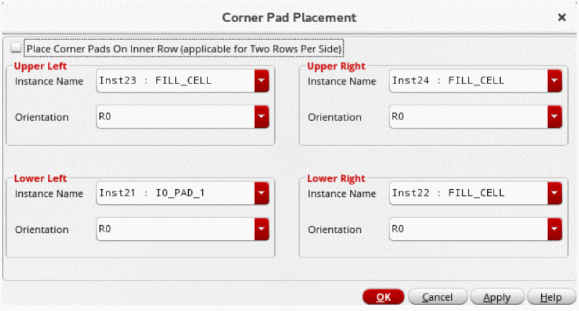
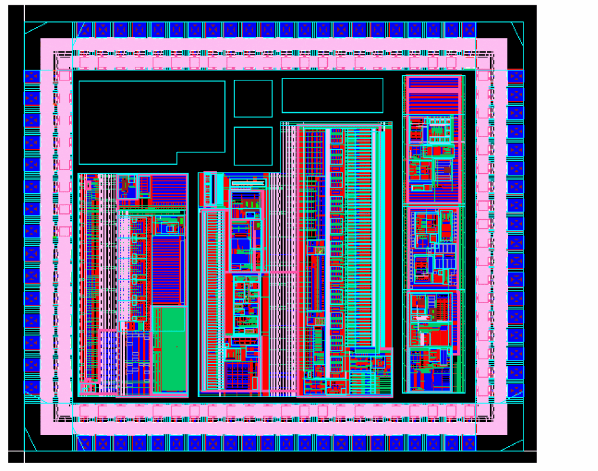

Inserting Corner Cells
Before inserting corner cells, ensure the following:
-
The library has at least four instances of corner cells with their
cellTypeset to corner. -
The row in which the corner cells must be placed has the same
sitePatternas the corner cells. -
The technology file contains the
sitePatterndefinition under thesiteDefssection.
If all the above conditions are met, a corner row of the given sitePattern is created and cells with cellType corner are inserted in these rows.
- Select corner instances from the Navigator assistant, the search engine, or design canvas.
-
Choose Floorplan – I/O Placer – Corner Pad Placer to invoke the Corner Pad Placement form.
The form is by default populated with the selected instances. If the corner instances are not selected, the form is not displayed and a corresponding message is displayed in the status bar.
 - Specify if you want to place and align the corner pads to the inner rows in a two row per side design using . If you use this option in a design with a single IO row per side, a suitable message is displayed in the CIW.
-
Select Place Corner Pads On Inner Row (applicable for Two Rows Per Side) to place corner cells in the inner row in designs that have two IO rows on each side, as shown in the following image:
This option does not work on designs with a single IO row per side. - Select an instance for each corner from the Instance Name list.
- Set the orientation for each corner from the Orientation drop-down list.
- Click OK.
A corner row is created automatically and corner cells are placed as per your specifications.

Related Topics
Return to top